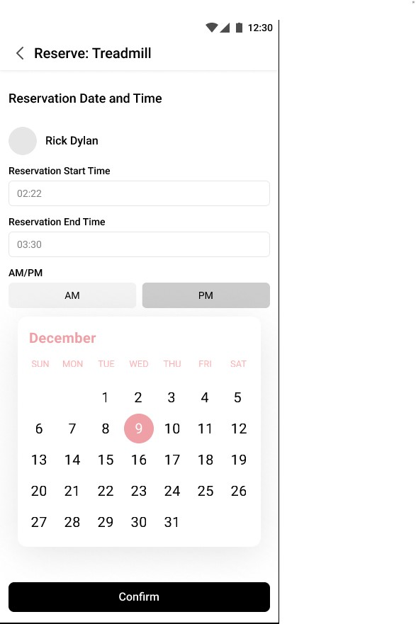

Problem Statement
"As a fitness enthusiast seeking efficient and flexible gym experiences, I want to easily discover, reserve, and access available gym equipment, ensuring a seamless and tailored workout routine every time."
Personas
Jake, The Regular Gym-goer
Jake hits the gym four times a week right after work. He has a strict workout routine and gets frustrated when he has to wait or search for equipment. He wants to optimize his gym time.
Mia, The Fitness Enthusiast
Mia enjoys trying new equipment and mixes up her routine often. She dislikes wandering around the gym, feeling lost. She's tech-savvy and appreciates efficiency.
Ron, The Senior Gym Member
Ron goes to the gym for health reasons. He's not familiar with all the equipment and would like a guide to help him locate and use machines effectively.
Design Process
As a fitness enthusiast frequently on the move, I faced a common challenge shared by many individuals—finding and accessing gym equipment efficiently. Existing solutions lacked the seamlessness I desired, prompting the conceptualization of FitFinder, a mobile app aimed at simplifying the gym equipment reservation process.
Of course, I couldn't rely on my own experience alone. I brought my initial ideas to some friends and they seemed just as interested as me, so I decided to start conducting some official research. After researching, my task was to design an intuitive and user-friendly solution that addressed the pain points identified during the research phase. Key tasks included understanding user needs through interviews, brainstorming features that catered to those needs, and ultimately creating a high-fidelity prototype for FitFinder.
Official Steps:
Understanding User Needs:
Conducted user interviews to identify challenges faced by fitness enthusiasts during their workout routines.
Analyzed existing fitness apps to understand market trends and potential areas for improvement.
Ideation and Conceptualization:
Engaged in brainstorming sessions to generate feature ideas that aligned with user needs.
Created low-fidelity sketches and wireframes to visualize and iterate on these concepts
Prototyping and Testing:
Developed a low-fidelity prototype to simulate the basic user flow.
Conducted usability testing, gathered feedback, and iteratively refined the design based on user insights.
High-Fidelity Prototype Development:
Progressed to a high-fidelity prototype by refining visual elements and ensuring a consistent design language.
Implemented feedback from usability testing to enhance the overall user experience.
Usability Testing and Iteration:
Conducted an additional round of usability testing on the high-fidelity prototype.
Adjusted interaction patterns, button placements, and overall flow based on user feedback.
Solution Rationale
FitFinder's design rationale is rooted in addressing the key challenges identified during the research phase and providing users with a streamlined and intuitive solution. The following design principles and decisions were implemented to achieve an optimal user experience:
-
Clarity and Simplicity:
The user interface prioritizes clarity and simplicity to ensure that users can quickly understand and navigate the app. Clear icons, concise labels, and straightforward navigation contribute to a user-friendly experience.
-
Visual Hierarchy:
A well-defined visual hierarchy guides users through the app, highlighting essential elements such as equipment availability, reservation status, and user actions. This helps users focus on critical information without feeling overwhelmed.
-
User-Centric Reservation Process:
The reservation process was designed with the user in mind. A step-by-step approach ensures that users can effortlessly select equipment, choose a convenient date and time, and confirm their reservation. This approach minimizes friction and encourages users to engage with the app regularly.
 -
Accessibility Considerations:
Accessibility features, such as clear contrast in color choices and legible typography, were incorporated to ensure that FitFinder is usable by a diverse range of users, including those with visual impairments.
User Feedback
Initial user feedback emphasized the app's intuitive design and the convenience it brought to users' workout routines. Users appreciated the visual cues for equipment availability and the straightforward reservation process. I also gained useful feedback on the homepage which allowed me to restructure it for improved user flow.
Next Steps
User Testing Iterations:
Conduct additional rounds of user testing to refine the user interface and address any usability concerns.
Integration with Gym Partners:
Explore partnerships with gyms to integrate real-time equipment availability data, enhancing accuracy.
Mobile App Development:
Move from a prototype to a fully functional mobile app, ensuring a seamless user experience across devices.